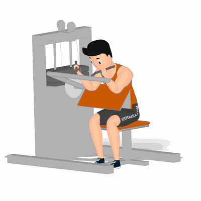

Rosca Scott no Aparelho

O exercício tem como foco principal trabalhar o bíceps braquial e o coracobraquial, trabalhando extensões e flexões de antebraço e braço para promover o crescimento e fortalecimento dessa musculatura.
Ficha Técnica
Tipo: Musculação
Grupo Muscular: Bíceps
Aparelho: Nenhum
Músculos: Nenhum
Como realizar
- Ajuste a altura assento do aparelho de forma que seu peito e a parte posterior dos braços (tríceps) fiquem em contato com o apoio;
- Deixe o tronco reto, o core ativado e as escápulas retraídas durante todo o exercício para manter o corpo estabilizado;
- Segure a barra do aparelho com a palma das mãos voltadas para cima;
- Em um movimento contínuo, flexione os braços até o máximo que conseguir, sem desencostá-los do apoio nem deixar os ombros projetarem para a frente;
- Ainda em um movimento contínuo, desça a barra até que os cotovelos fiquem levemente flexionados.
 RC STORE
RC STORE